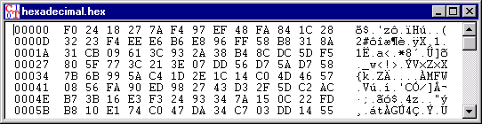

Window for hexadecimal inputs and outputs
Menu icon:
This window is used to display documents which contain non-displayable special characters.
In this type of document the editing options are somewhat limited (see Edit menu): The length of the text must be preserved. Characters can therefore be overwritten, but not removed or inserted. Hence the Edit \ Cut menu option does not work. The commands Copy and Paste are possible, although it should be noted that the insertion of characters overwrites what is already there rather than moving it further down the document.
The window for hexadecimal inputs and outputs is designed as follows:
The first column contains a serial hexadecimal number of the position of the characters displayed in the other two columns.
In the second column the characters are presented in hexadecimal form (see ASCII Table). One character is represented by two characters one after the other (0, 1,..., 9, A, B,..., F).
In the third column the displayable characters are shown in accordance with their ASCII code. Non-displayable characters are depicted by a dot.
If the hexadecimal value of a character is changed, the ASCII character displayed is modified and vice versa.

Documents which consist only of letters are displayed in a window for letter string inputs and outputs. On the other hand, documents without any special characters are displayed in a window for textual inputs and outputs.
It is possible to force the display to take the form of a window for textual inputs and outputs by selecting the menu option View \ Show as text (Note: this results in loss of all characters behind the first 'NULL' (this text format character indicates the end of file) ascii character).